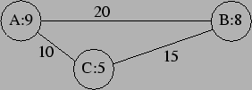

Beschrijving
In het Verenigd Europa wordt voor alles voorschriften, richtlijnen en regeltjes opgesteld. Een van de zaken die zich echter geheel aan centrale directie lijken te onttrekken is de prijs van benzine. Verschillen in belasting maken dat de benzineprijs van land tot land, en zelfs van stad tot stad zeer uiteen kan lopen. Het gevolg is dat conventionele routeplanners niet meer voldoen aan de wensen van de calculerende automobilist. De automobilist die door Europa reist zoekt niet meer de route met de minste kilometers, maar de goedkoopste route. Dat wil zeggen dat omrijden voor goedkopere benzine acceptabel is.

De softwaregigant About besluit op deze wens in te spelen. Hun programma houdt al rekening met het rijgedrag van de individuele bestuurder, en met het gebruik van de auto. Zodoende drukt dit programma afstanden niet uit in kilometers, maar in liters benzine. Voorts zijn de benzineprijzen in alle plaatsen bekend. Waar de programmeurs van About nog niet uit zijn is het volgende: hoe bereken je nu de goedkoopste route van A naar Z, gegeven alle afstanden (in liters) en de benzineprijzen in alle plaatsen (in dE: deci-Euros).
In bovenstaand plaatje moet je om van A direct naar B te rijden, in A 20
liter tanken, tegen 9 dE, kost 180 dE. Van A naar C kost 90 dE, tanken in C
voor de rit naar B kost
dE, totaal 165 dE.
De omweg over C is dus goedkoper, hoewel het meer benzine kost.
(Groen Links heeft de Minister dan ook verzocht dit soort programma's te
verbieden).
Probleem
Gegeven is een routekaart, met de afstand tussen steden in liters, en bij elke stad de benzineprijs in die stad (in dE). Zowel de afstanden als de literprijzen zijn altijd gehele getallen. Ook zijn twee steden en gegeven. Bepaal de minimale kosten om van in te komen.
Invoer (lezen uit: benzine.in)
De eerste regel van de invoer bevat het aantal tests. Dan volgt een aantal tests. Elke test is als volgt opgebouwd:
Voor een test gelden de volgende regels:
Uitvoer (schrijven naar standard-output)
Voor elk testgeval apart op een regel: de minimale kosten (in dE) om van de
plaats van vertrek in de plaats van aankomst te komen.
Als de plaats van aankomst niet bereikbaar is vanuit de plaats van vertrek,
het woord: 'ONMOGELIJK'
Voorbeeld
Invoer
2
3
A 9 2
B 20
C 10
B 8 2
A 20
C 15
C 5 2
A 10
B 15
AB
2
A 30 1
B 100
B 30 1
A 100
AB
Uitvoer
165
ONMOGELIJK